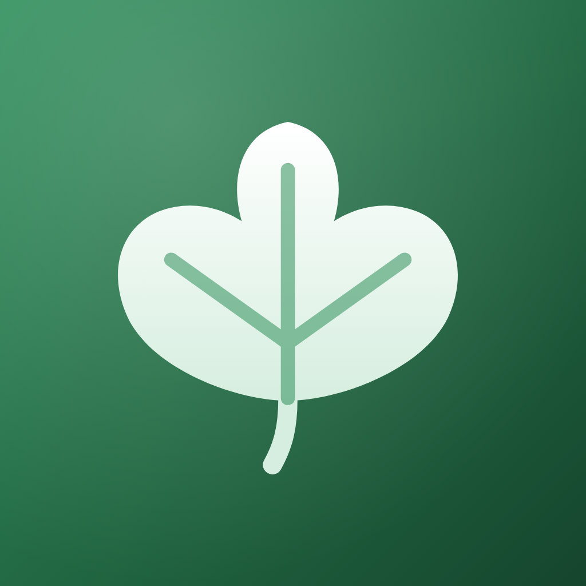

Liverleaf
How does the food check work?
Snap a photo, scan a barcode, type or say what you ate. The AI names the foods and estimates the nutrients, then our own rules, based on liver and nutrition guidelines, give a green, amber or red answer with the reason and a better swap. Amounts are estimates, so treat them as a guide.
Where is my data kept?
Your meals, weight, activity, test results, scan numbers and settings are stored only on your phone. There's no account. Read the privacy policy for exactly what is sent when you check a food.
How do I move to a new phone?
Your phone's normal backup (iCloud or Google) brings your data along. You can also go to You → Backup and restore to save a backup file and restore it on the new phone.
How do I restore or cancel Liverleaf Pro?
Restore: open the You tab in the app and tap Restore purchases, using the same Apple or Google account you bought with.
Cancel on iPhone: Settings → your name → Subscriptions → Liverleaf. Cancel on Android: Google Play → Payments and subscriptions → Subscriptions. Cancel at least 24 hours before the renewal date to avoid the next charge.
How do I delete my data?
Deleting the app removes everything stored on your phone. To delete what our server keeps (an anonymous ID, your daily check count, Pro status and any support messages), write to us from the support chat in the app and ask us to delete your data.
Is this medical advice?
No. Liverleaf shares general information from liver and nutrition guidelines to help you build healthy habits. It doesn't diagnose, treat or prevent any condition and doesn't interpret test results. Always follow your doctor or dietitian.